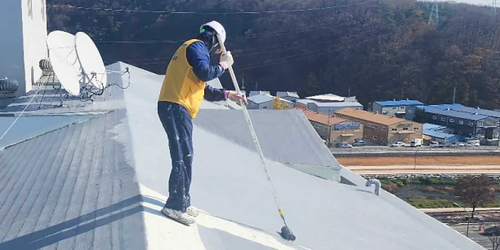
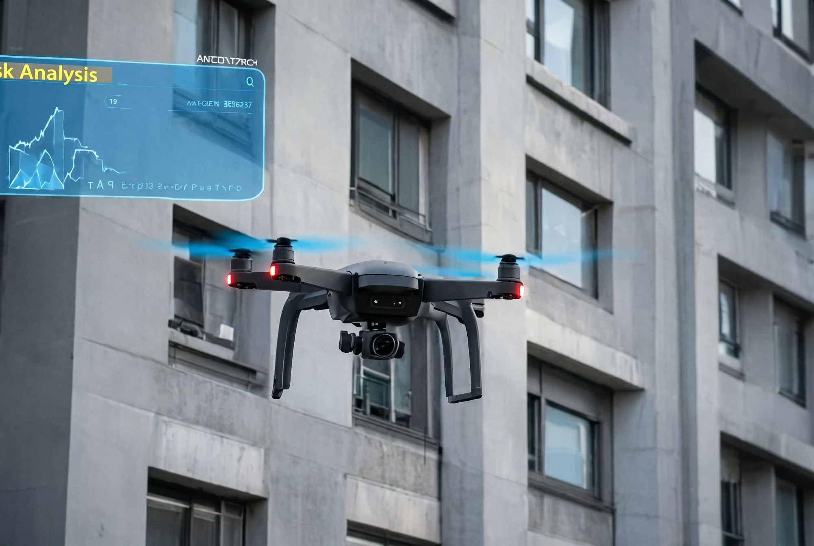
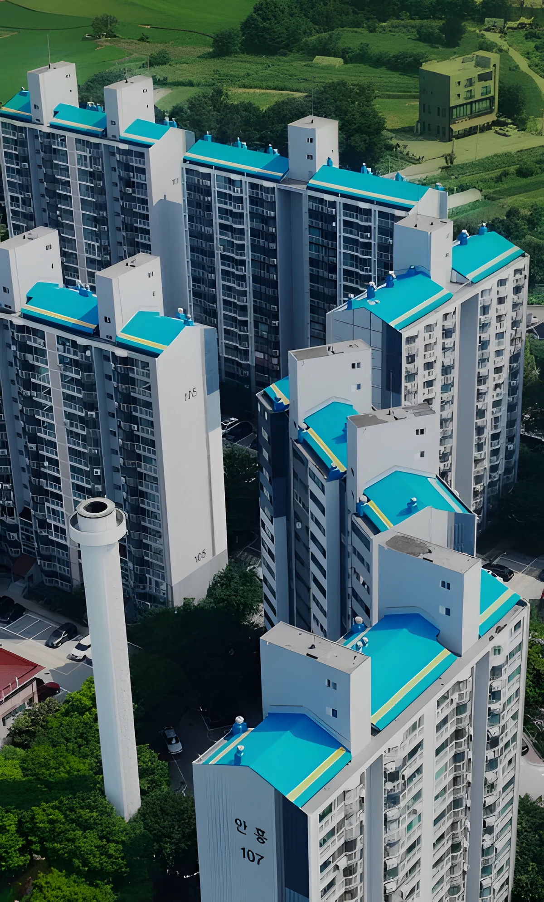

E
Environmental환경을 지키는 기술
- 친환경 인증 · 녹색기술 방수 도막재 개발 확대
- 오래가는 공법으로 재시공 · 폐기물 감소
- 차열 기술로 에너지 절감
- 건축물 수명 연장 → 환경 부담 완화
건물의 상처를 발견하고, 치유하며, 오래도록 지켜낸다2007년부터 펜테크가 지켜 온 사명입니다.
더 완전한 방수 기술로 안전한 건물과
지속 가능한 생활환경을 만듭니다.

프리미엄 방수 페인트 기술로 건물의 수명과 구조적 안전을 더 확실하게 지킵니다.

자체 개발한 에어레카의 데이터 기반 진단으로 위험을 더 빨리 찾고 더 안전하게 대응합니다.
친환경성과 지속성을 고려한 방수 기술로 건축물을 더 오래, 더 건강하게 유지합니다.

투명한 공정과 책임 있는 기술로 언제나 믿을 수 있는 기업으로 남겠습니다.
기술로 건물과 자연을 보호하고,
책임 있는 실천으로 신뢰를 더합니다


주거 취약계층이 더 안전한 공간에서 살 수 있도록, 방수·도장 기술로 이웃의 집을 고칩니다.